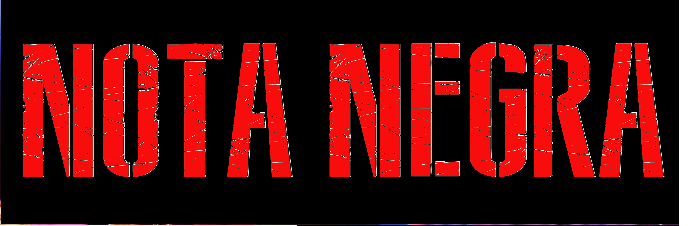
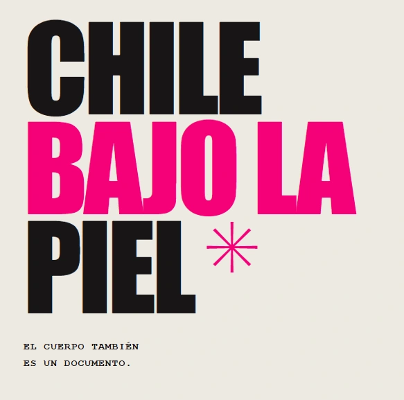

STUDIO.React · 2D / 3D · Motion
Aplicación en evolución
LAB Generative Design Studio
Herramientas de composición generativa, capas, animación y superposición 3D. Diseño de interfaz, interacción y flujo de exportación.
Diseño gráfico · UX/UI · Identidad visual
Creo experiencias digitales con claridad estratégica, fuerza visual y una personalidad reconocible. Trabajo entre la identidad de marca, la interfaz y la narrativa.
Proyectos recientes · 2026
Una selección de aplicaciones y herramientas creativas en desarrollo. Cada artefacto enlaza con su aplicación, repositorio o documentación disponible.
Herramientas de composición generativa, capas, animación y superposición 3D. Diseño de interfaz, interacción y flujo de exportación.
Editor tridimensional independiente para geometrías, personajes, rigs y animación, concebido para intercambiar recursos con LAB Studio.
Ecosistema que organiza recursos 2D/3D, modelos, materiales, animaciones y flujos de intercambio. La sincronización automática con Drive sigue pendiente.
Investigación artística que combina sistemas geométricos, vectores editables y composición audiovisual. Propuesta vinculada a la convocatoria FNA Argentina 2026.
Diseño de un flujo no destructivo para transferir modelos y escenas desde GENRE3D hacia LAB Studio y herramientas de posproducción. Importación completa aún no validada.
Selección de trabajos
Aplicación de diseño generativo 2D/3D: arquitectura UX/UI, sistema de componentes, lenguaje visual, tipografía, color y criterios de marca. Herramientas creativas, animación y exportación en evolución.
Aplicación de creación 3D con edición de geometrías, personajes, rigging y animación. Su UI Kit y sistema de interfaz forman parte del diseño del producto.
 UX/UI · Producto digital
UX/UI · Producto digitalFlujos, interfaz de billetera y arquitectura de producto.

Editorial · Diseño visualJerarquía editorial, identidad y experiencia de lectura.

Investigación · PatrimonioInvestigación cultural sobre tatuaje en Chile: memoria, archivo y diseño editorial.
Manifiesto
Cada proyecto debe comunicar con precisión, generar confianza y aportar una diferencia clara. Por eso diseño sistemas, interfaces y piezas visuales que funcionan como lenguaje de marca y no como mero acabado.
Sobre mí
Soy Diego Pazos, diseñador y creador de experiencias digitales con mirada estratégica. Me interesa convertir ideas complejas en sistemas claros, memorables y capaces de sostener una presencia real.
Enfoque
Diseñé este portafolio para que funcione como un sistema de comunicación: transmite quién soy, qué hago y por qué el trabajo se distingue. La idea es que cada pieza tenga una razón, una voz y una intención.
Servicios
Identidad visual, narrativa, voz y sistemas de marca pensados para reconocimiento, consistencia y resonancia.
Interfaces limpias, consistentes y orientadas a la acción con foco en claridad, usabilidad y experiencia.
Landing pages, campañas y experiencias web con tono propio, objetivos claros y presencia que se recuerda.
Proceso
Entiendo el contexto, público y la diferencia que debe marcar tu proyecto.
Contexto claro, objetivos definidos y una base sólida para tomar decisiones.
Defino la propuesta estética, la tipografía, el tono y los elementos clave.
Identidad visual definida, coherente y adaptable a distintos formatos y medios.
Materializo la pieza o experiencia con coherencia, consistencia y estructura.
Producto funcional, listo para ser usado, medido y mejorado con datos reales.
Portfolio
Archivo visual · Selección
Identidades, ilustración y exploraciones gráficas. Una selección donde muestro piezas terminadas y también parte del proceso que hay detrás.
Símbolo geométrico y contraste verde/negro para una marca comercial.
Marca e identidad visual desarrolladas por Diego Pazos: lettering, sistema cromático, versiones de logo y aplicaciones.
Personaje, movimiento y color en una composición con una niña, su gato y mariposas.
Repetición, curvas y contraste en blanco y negro para construir profundidad visual.
Jesucrisis · gráfica en movimiento
Estos GIF son parte del desarrollo visual que hice para Jesucrisis. No salieron de una sola pieza terminada: fui probando color, collage, dibujo, siluetas, contraste y movimiento hasta encontrar una gráfica que tuviera la fuerza de la banda.
Partí mezclando imagen, textura, logo y silueta. Esta prueba me sirvió para ver cuánto ruido visual podía soportar la pieza sin perder el nombre de la banda.
Acá llevé la gráfica a un contraste más duro, usando la silueta como protagonista y haciendo que el movimiento apareciera por capas.
Probé una versión más fría para ver cómo cambiaba el tono. Mantiene la misma base, pero el color la hace sentirse más nocturna y pesada.
En esta etapa reduje elementos y ordené mejor el fondo para que la silueta, el símbolo y la dirección de lectura quedaran más claros.
Volví al dibujo y a una composición más clara para comparar legibilidad. Fue una forma de probar la identidad sin depender tanto del bloque de color.
Quité elementos para comprobar cuánto podía simplificar la composición sin perder carácter. Esa comparación también fue parte del desarrollo.
Stack
Contacto
Escribime con tu idea, proyecto o necesidad. Te respondo con una propuesta clara y una ruta de trabajo.